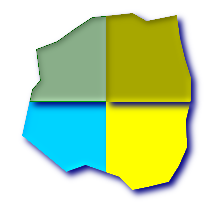

名前
ST_Subdivide — 指定した数より多い頂点を持たないジオメトリの集合を返します。
概要
setof geometry ST_Subdivide(geometry geom, integer max_vertices=256);
説明
一つのジオメトリを、許された頂点数の最大値より小さい要素の集合にします。非常に大きなポリゴンとオブジェクトをデータベースのページサイズに収まるように、小さい部分に変換するのに使います。ST_ClipByBox2Dが行うような四角形切り抜きと同じことを行い、入力ジオメトリをすべてのポイントが頂点最大値未満になるまで再帰的に分割していきます。指定できる頂点最大値の最小値は8で、8未満を指定しようとすると、エラーが投げられます。
切り抜きはGEOSモジュールを使っています。
![[注記]](images/note.png) | |
GEOS 3.5.0以上が必要です。 |
Availability: 2.2.0 GEOS 3.5.0以上が必要です。
例
-- 元のジオメトリに結合するのに適切な、新しい分割されたテーブルの作成 CREATE TABLE subdivided_geoms AS SELECT pkey, ST_Subdivide(geom) AS geom FROM original_geoms;
 最大10頂点での分割
SELECT row_number() OVER() As rn, ST_AsText(geom) As wkt
FROM ( SELECT ST_SubDivide('POLYGON((132 10,119 23,85 35,68 29,66 28,49 42,32 56,22 64,32 110,40 119,36 150,
57 158,75 171,92 182,114 184,132 186,146 178,176 184,179 162,184 141,190 122,
190 100,185 79,186 56,186 52,178 34,168 18,147 13,132 10))'::geometry,10)) As f(geom);
rn | wkt
---+---------------------------------------------------------------------------
1 | POLYGON((22 64,29.3913043478263 98.000000000001,106.000000000001 98.00000000001,
106.000000000001 27.5882352941173,85 35,68 29,66 28,49 42,32 56,22 64))
2 | POLYGON((29.3913043478263 98.000000000001,32 110,40 119,36 150,57 158,
75 11,92 182,106.000000000001 183.272727272727,106.000000000001 98.000000000001,
29.913043478263 98.000000000001))
3 | POLYGON((106.000000000001 27.5882352941173,106.000000000001 98.00000000000,
189.52380952381 98.000000000001,185 79,186 56,186 52,178 34,168 18,147 13,
132 0,119 23,106.000000000001 27.5882352941173))
4 | POLYGON((106.000000000001 98.000000000001,106.000000000001 183.27272727272,
114 184,132 186,146 178,176 184,179 162,184 141,190 122,190 100,189.5238095238
98.000000000001,106.000000000001 98.000000000001))
|
 分割に使うことができる頂点の追加にST_Segmentizeを併用します
SELECT ST_AsText(ST_SubDivide(ST_Segmentize('LINESTRING(0 0, 100 100, 150 150)'::geometry,10),8));
LINESTRING(0 0,7.07106781186547 7.07106781186547,14.1421356237309 14.1421356237309,21.2132034355964 21.2132034355964,28.2842712474619 28.2842712474619,35.3553390593274 35.3553390593274,37.499999999998 37.499999999998) LINESTRING(37.499999999998 37.499999999998,42.4264068711929 42.4264068711929,49.4974746830583 49.4974746830583,56.5685424949238 56.5685424949238,63.6396103067893 63.6396103067893,70.7106781186548 70.7106781186548,74.999999999998 74.999999999998) LINESTRING(74.999999999998 74.999999999998,77.7817459305202 77.7817459305202,84.8528137423857 84.8528137423857,91.9238815542512 91.9238815542512,98.9949493661167 98.9949493661167,100 100,107.071067811865 107.071067811865,112.499999999998 112.499999999998) LINESTRING(112.499999999998 112.499999999998,114.142135623731 114.142135623731,121.213203435596 121.213203435596,128.284271247462 128.284271247462,135.355339059327 135.355339059327,142.426406871193 142.426406871193,149.497474683058 149.497474683058,149.999999999998 149.999999999998)
|